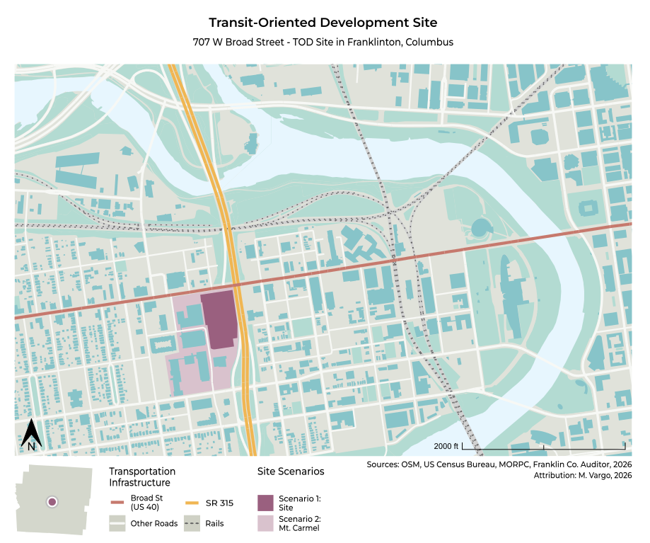

Modeling Travel to Mixed-Use Sites
Mixed-Use Trip Generation: Info and Context
Accurately modeling traffic to a site is complex for many reasons, though some sites are made more complex by the collocation of mixed land uses. A multistory, mixed-use urban development might have multiple commercial uses on the ground floor, with upper floors occupied by housing or offices. This creates a stark divergence from the traditional process of modeling trip generation to a given location.
The amount of travel to a given land use has historically been modeled using the Institute of Transportation Engineers’ (ITE) Trip Generation Manual (TGM). However, this has historically failed to account for the way that collocated uses change travelers’ behavior. For instance, if a single site contains a bank, a grocery store, a coffee shop, and upper-story residential (as one of my former apartments did), trip generation models that do not account for the collocation of these land uses may overcount the number of trips generated to a given site. This can lead to inefficient planning and design of the site and its surrounding infrastructure.
The Assignment: Teaching Mixed-use Trip Gen
Working as a teaching assistant at the Ohio State University in the spring of 2026, I sought to reveal the complexities of mixed-use trip generation modeling to undergraduate students in a class on transportation and land use. Working at the direction of Dr. Manuel Santana Palacios, I led assignment design and assessment using the U.S. EPA’s Mixed-Use Trip Generation Model (“MXD Tool”). Designed by Fehr & Peers, the MXD Tool shows how mixed-use sites can reduce the total number of forecasted trips relative to the ITE Trip Generation Manual.
Setting Up the Assignment
The MXD Tool requires multiple inputs to effectively compute site-specific trip generation. While I came up with some project specs, other inputs were estimated from the site’s surroundings, land use context, and open data sources. These included approximate employment figures and square footage for the nearby hospital, nursing college, administrative and office space, and other on-site amenities.
Most complexly, I estimated the number of jobs within both a one-mile radius of the site and within a 30-minute door-to-door transit commute from the site. The latter figure, which the authors of the MXD Tool themselves admit can be hard to come by, required coding an accessibility analysis in R using Conveyal’s R5 routing engine. I used employment projections by traffic analysis zone (TAZ), provided by MORPC, the Central Ohio MPO, to estimate the transit-accessible jobs for residents of the site. By using an area-weighted interpolation of the TAZs’ employment values using a 30-minute transit isochrone, students were provided with a precise, well-reasoned estimate of the jobs accessible from the site by transit services.

Assignment Objectives
Provided with project specs on land uses, jobs, and residents for a proposed development in downtown Columbus, Ohio, students were tasked with the following:
- Assessing the transportation context of the site, particularly how existing transit service and a proposed BRT route along US-62 (Broad Street) impact the development’s viability.
- Researching the land use context of the site, including the implications of recent changes to the zoning ordinance of the City of Columbus.
- Evaluating forecasted trip generation of two model scenarios: first for the new development, and second for the site in its immediate land use context. Surroundings included a hospital, a small nursing college, offices and administrative buildings, and an existing residential structure.
- Explaining how results change as the MXD Tool accounts for collocated land uses.
- Discussing the benefits and limitations of the EPA’s MXD Tool.
Learning Outcomes
- Improving students’ understanding of travel demand models, how land use influences travel behavior, and complications in modeling trip generation.
- Practicing assessment techniques, critical writing, and analysis regarding land use ordinances, site design, and transportation systems.
- Experience synthesizing information about a real-world project by offering sharp analyses and defensible judgements on a proposed development.